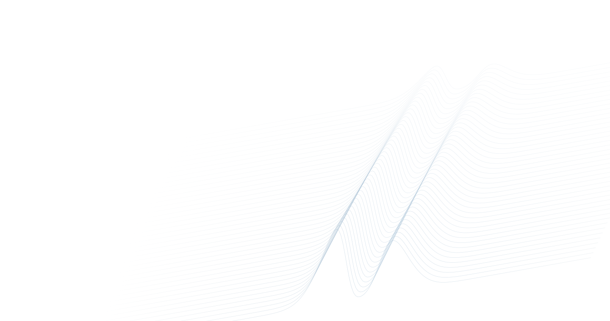
DEERTransformer:From signals todistance distributions
Learning to recover spin-label distance distributions
from DEER spectroscopy.
The distance between two sites on a protein is not always a single number. Recovering a distribution of distances can reveal the conformations it occupies.
Double electron–electron resonance (DEER) spectroscopy measures interactions between spin labels attached to a protein. Turning those signals into a distribution of distances is an inverse problem: different distributions can explain similar measurements, especially when the data are noisy.
I developed an encoder–decoder transformer that learns this mapping from simulated examples. It predicts a distance distribution in one forward pass, without requiring the user to choose a number of Gaussian components.
- 1.5M
- simulated traces for
training and validation - 2,706
- benchmark traces across
two noise conditions - ≈30%
- lower mean error than DEERNet
in both noise conditions
01 / Reconstruction accuracy
Improving on the neural baseline
On two independent synthetic benchmarks, DEERTransformer achieved lower mean reconstruction error than DEERNet. Each benchmark contains 1,353 traces, evaluated against a known distance distribution.
Error is measured as earth mover’s distance (EMD), in ångströms. It describes how far probability mass must move to match the reference distribution. Lower is better.
Distance reconstruction error
Mean EMD · Lower is better
Low noise
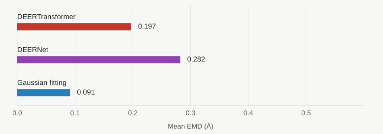
High noise
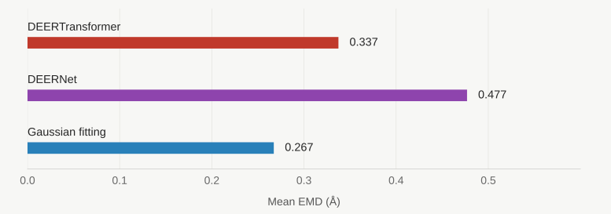
View the numerical comparison
| Method | Low noise | High noise |
|---|---|---|
| DEERTransformer | 0.197 | 0.337 |
| DEERNet | 0.282 | 0.477 |
| Gaussian fitting | 0.091 | 0.267 |
Gaussian fitting retained the lowest average error in both conditions. DEERTransformer’s improvement is relative to the neural baseline; it does not establish superiority over every reconstruction method.
02 / Looking beyond the average
One signal.
Several ways to read it.
Average error tells only part of the story. These five examples from the high-noise benchmark show how the methods recover peak positions, widths, and relative amplitudes.
Narrow unimodal distribution
High noise · Sample 29
Recovered distance distribution
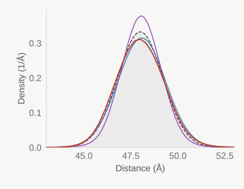
Input DEER trace
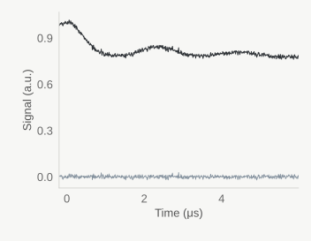
Gaussian fitting and DEERTransformer recover similar peak profiles. DEERNet produces a taller, sharper peak.
Closely spaced bimodal distribution
High noise · Sample 800
Recovered distance distribution
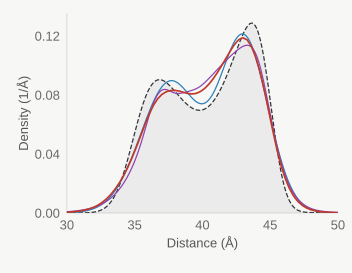
Input DEER trace
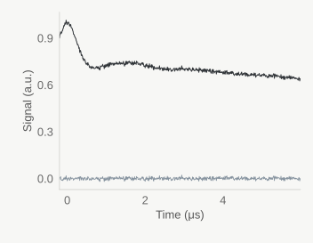
All three methods recover two populations and underestimate the taller peak. Gaussian fitting reproduces a deeper valley; both neural methods retain more density between peaks.
Well-separated bimodal distribution
High noise · Sample 702
Recovered distance distribution
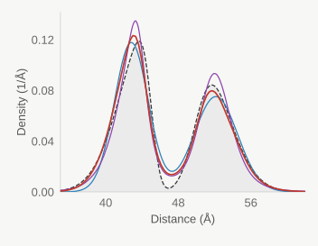
Input DEER trace
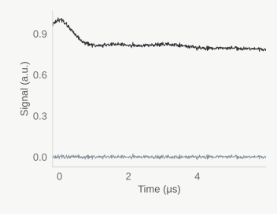
All three methods resolve both peaks but retain excess density in the valley. DEERNet produces taller peaks and Gaussian fitting lower peaks, with DEERTransformer in between.
Two peaks with unequal amplitudes
High noise · Sample 701
Recovered distance distribution
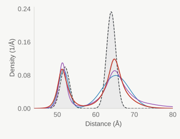
Input DEER trace
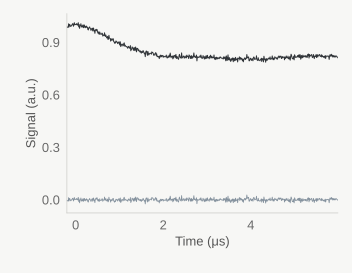
All three methods broaden and lower the taller, longer-distance peak. DEERTransformer preserves more of its height than the other methods, but still underestimates the ground truth.
Three distinct populations
High noise · Sample 1000
Recovered distance distribution
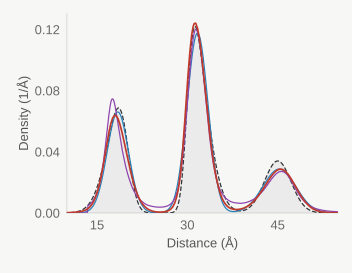
Input DEER trace
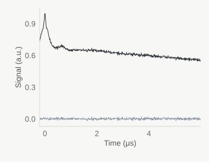
All three methods recover three populations but underestimate the broad, longest-distance peak. DEERTransformer slightly overestimates the central peak height.
03 / Testing the limits
Beyond the distributions
seen during training
The model was trained on distributions containing one to three components. A separate benchmark tested four-component distributions: across 1,353 traces, mean EMD was 0.927 Å and median EMD was 0.634 Å.
This is a more demanding evaluation, but it also uses different noise sampling. The change in error cannot be attributed to the fourth component alone.
Four-component benchmark · Sample 0
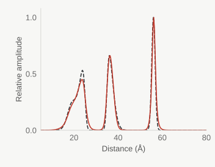
Four-component benchmark · Sample 1
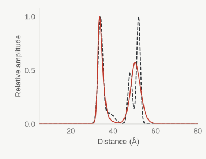
04 / The approach
Learning the inverse problem
DEERTransformer uses an encoder–decoder transformer to connect a complex time-domain signal with a spin-label distance distribution. Training pairs physics-simulated traces with their known distributions, giving the model examples of how distance populations appear in a signal.
At inference, the model predicts the distribution directly. Evaluation compares its output with ground truth and established methods, using physical-distance EMD alongside visual inspection of the reconstructed peaks.
- 01 / InputA complex DEER trace
The real and imaginary signal components, together with their time coordinates.
- 02 / Learned mappingAn encoder–decoder model
A transformer learns relationships between the signal and the distance distribution.
- 03 / OutputA distribution of distances
Probabilities over spin-label distances, produced in one forward pass.
This overview presents selected results and summarized methods from the September 2026 working manuscript. The study remains in preparation, and performance beyond the tested conditions requires further validation.
Back